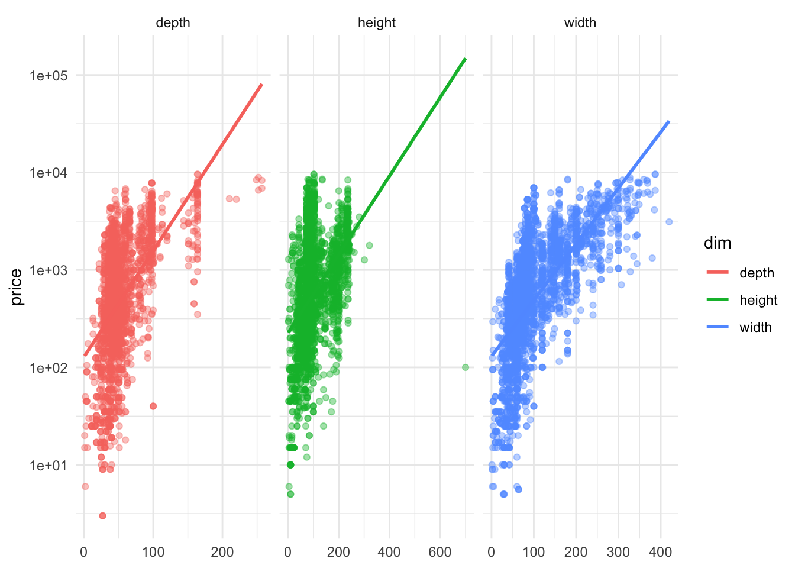
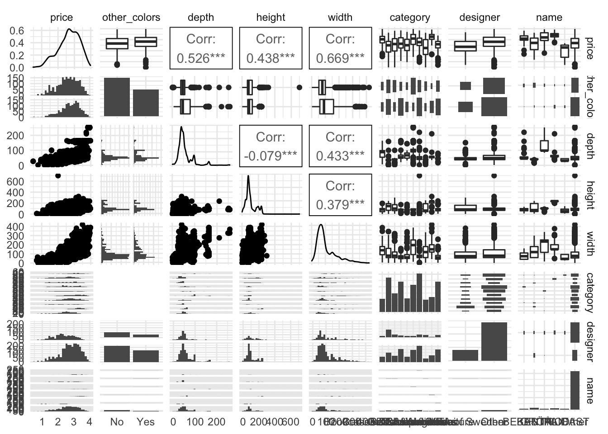
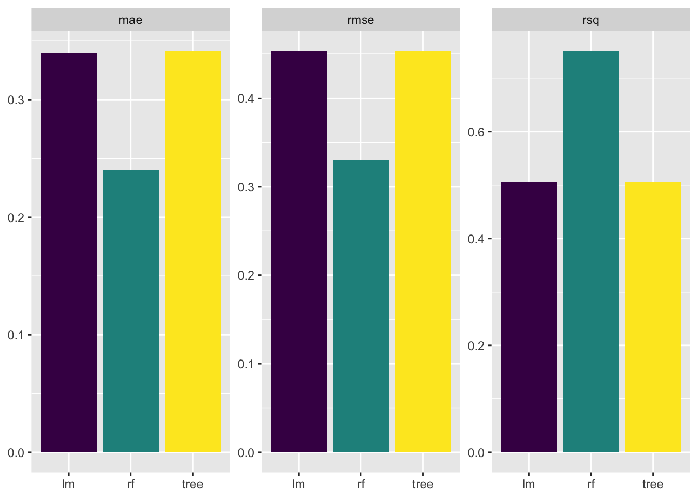
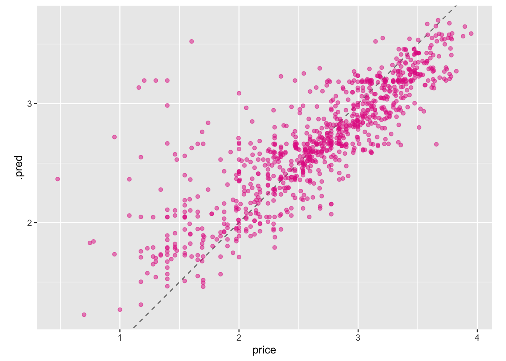
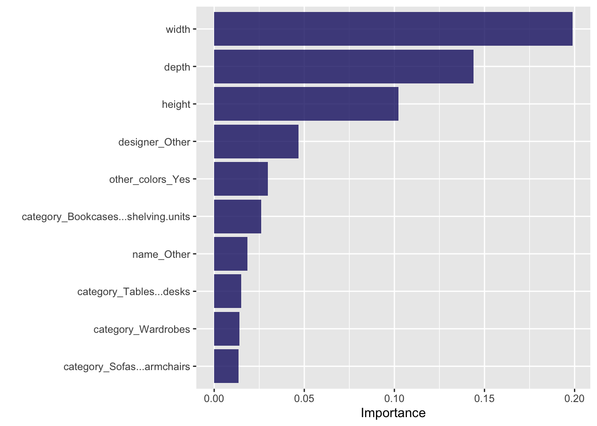

Este webinar usará dados do Ikea, uma loja de móveis com filiais em várias partes do mundo.
O próposito é prever o preço dos móveis vendidos na IKEA a partir de várias características destes produtos como a categoria e o tamanho do móvel, conforme aqui.
Vamos carregar os dados e ver as primeiras linhas
library(tidyverse)
ikea <- read_csv("https://raw.githubusercontent.com/rfordatascience/tidytuesday/master/data/2020/2020-11-03/ikea.csv")
head(ikea)## # A tibble: 6 × 14
## ...1 item_id name categ…¹ price old_p…² sella…³ link other…⁴ short…⁵
## <dbl> <dbl> <chr> <chr> <dbl> <chr> <lgl> <chr> <chr> <chr>
## 1 0 90420332 FREKVENS Bar fu… 265 No old… TRUE http… No Bar ta…
## 2 1 368814 NORDVIKEN Bar fu… 995 No old… FALSE http… No Bar ta…
## 3 2 9333523 NORDVIKEN … Bar fu… 2095 No old… FALSE http… No Bar ta…
## 4 3 80155205 STIG Bar fu… 69 No old… TRUE http… Yes Bar st…
## 5 4 30180504 NORBERG Bar fu… 225 No old… TRUE http… No Wall-m…
## 6 5 10122647 INGOLF Bar fu… 345 No old… TRUE http… No Bar st…
## # … with 4 more variables: designer <chr>, depth <dbl>, height <dbl>,
## # width <dbl>, and abbreviated variable names ¹category, ²old_price,
## # ³sellable_online, ⁴other_colors, ⁵short_description
## # ℹ Use `colnames()` to see all variable namesTambém vamos fazer uma revisão geral dos dados
library(skimr)
skim(ikea)| Name | ikea |
| Number of rows | 3694 |
| Number of columns | 14 |
| _______________________ | |
| Column type frequency: | |
| character | 7 |
| logical | 1 |
| numeric | 6 |
| ________________________ | |
| Group variables | None |
Variable type: character
| skim_variable | n_missing | complete_rate | min | max | empty | n_unique | whitespace |
|---|---|---|---|---|---|---|---|
| name | 0 | 1 | 3 | 27 | 0 | 607 | 0 |
| category | 0 | 1 | 4 | 36 | 0 | 17 | 0 |
| old_price | 0 | 1 | 4 | 13 | 0 | 365 | 0 |
| link | 0 | 1 | 52 | 163 | 0 | 2962 | 0 |
| other_colors | 0 | 1 | 2 | 3 | 0 | 2 | 0 |
| short_description | 0 | 1 | 3 | 63 | 0 | 1706 | 0 |
| designer | 0 | 1 | 3 | 1261 | 0 | 381 | 0 |
Variable type: logical
| skim_variable | n_missing | complete_rate | mean | count |
|---|---|---|---|---|
| sellable_online | 0 | 1 | 0.99 | TRU: 3666, FAL: 28 |
Variable type: numeric
| skim_variable | n_missing | complete_rate | mean | sd | p0 | p25 | p50 | p75 | p100 | hist |
|---|---|---|---|---|---|---|---|---|---|---|
| …1 | 0 | 1.00 | 1846.50 | 1066.51 | 0 | 923.25 | 1846.5 | 2769.75 | 3693 | ▇▇▇▇▇ |
| item_id | 0 | 1.00 | 48632396.79 | 28887094.10 | 58487 | 20390574.00 | 49288078.0 | 70403572.75 | 99932615 | ▇▇▇▇▇ |
| price | 0 | 1.00 | 1078.21 | 1374.65 | 3 | 180.90 | 544.7 | 1429.50 | 9585 | ▇▁▁▁▁ |
| depth | 1463 | 0.60 | 54.38 | 29.96 | 1 | 38.00 | 47.0 | 60.00 | 257 | ▇▃▁▁▁ |
| height | 988 | 0.73 | 101.68 | 61.10 | 1 | 67.00 | 83.0 | 124.00 | 700 | ▇▂▁▁▁ |
| width | 589 | 0.84 | 104.47 | 71.13 | 1 | 60.00 | 80.0 | 140.00 | 420 | ▇▅▂▁▁ |
Conforme visto no output do skim() há várias colunas em
formato de “character” e uma coluna com nome X1 que apenas
é um id de cada linha. Precisamos limpar o dataset para deixá-lo mais
adequado ao modelo de machine learning.
ikea_df <- ikea %>%
select(-1,-2, -link, -short_description, -old_price,
-sellable_online) %>%
mutate_if(is.character, as.factor)ikea_df %>%
select(price, depth:width) %>%
pivot_longer(depth:width, names_to = "dim") %>%
ggplot(aes(value, price, color = dim)) +
geom_point(alpha = 0.4, show.legend = FALSE) +
geom_smooth(method = "lm", se = FALSE)+
scale_y_log10() +
facet_wrap(~dim, scales = "free_x") +
labs(x = NULL)
Vamos deixar o preço com log(10)
ikea_df <- ikea_df %>%
mutate(price=log10(price),
category=fct_lump(category, prop = 0.05),
designer=fct_lump(designer, prop=0.05),
name=fct_lump(name, prop=0.02))
skim(ikea_df)| Name | ikea_df |
| Number of rows | 3694 |
| Number of columns | 8 |
| _______________________ | |
| Column type frequency: | |
| factor | 4 |
| numeric | 4 |
| ________________________ | |
| Group variables | None |
Variable type: factor
| skim_variable | n_missing | complete_rate | ordered | n_unique | top_counts |
|---|---|---|---|---|---|
| name | 0 | 1 | FALSE | 6 | Oth: 3179, BES: 173, PAX: 111, GRÖ: 83 |
| category | 0 | 1 | FALSE | 10 | Tab: 612, Boo: 548, Oth: 483, Cha: 481 |
| other_colors | 0 | 1 | FALSE | 2 | No: 2182, Yes: 1512 |
| designer | 0 | 1 | FALSE | 2 | Oth: 2866, IKE: 828 |
Variable type: numeric
| skim_variable | n_missing | complete_rate | mean | sd | p0 | p25 | p50 | p75 | p100 | hist |
|---|---|---|---|---|---|---|---|---|---|---|
| price | 0 | 1.00 | 2.67 | 0.65 | 0.48 | 2.26 | 2.74 | 3.16 | 3.98 | ▁▂▅▇▃ |
| depth | 1463 | 0.60 | 54.38 | 29.96 | 1.00 | 38.00 | 47.00 | 60.00 | 257.00 | ▇▃▁▁▁ |
| height | 988 | 0.73 | 101.68 | 61.10 | 1.00 | 67.00 | 83.00 | 124.00 | 700.00 | ▇▂▁▁▁ |
| width | 589 | 0.84 | 104.47 | 71.13 | 1.00 | 60.00 | 80.00 | 140.00 | 420.00 | ▇▅▂▁▁ |
Vamos fazer a análise das correlações
library(GGally)
ikea_df %>%
select(
price, other_colors, depth, height, width,
category, designer, name
) %>%
ggpairs()
O pacote tidymodels é uma evolução do caret
e procura facilitar a construção de modelos de machine learning,
seguindo um padrão que independe do modelo a ser construído (regressão
linear, árvores de decisão, etc.).
Vamos dividir o dataset em treino e teste:
library(tidymodels)
set.seed(1234)
ikea_split <- initial_split(ikea_df, strata=price)
ikea_train <- training(ikea_split)
ikea_test <- testing(ikea_split)Para aprimorar a robustez das nossas estimações, iremos usar um procedimento denominado k-fold cross validation ou validação cruzada.
ikea_fold <- vfold_cv(ikea_train)A recipe que iremos usar servirá para todos os modelos.
ikea_rec <- recipe(price ~ ., data = ikea_train) %>%
step_dummy(all_nominal()) %>%
step_impute_knn(depth, height, width)
ikea_wf <- workflow() %>%
add_recipe(ikea_rec)Vamos treinar um modelo de Regressão Linear (usando lm),
logo um de Árvore de Decisão (usando rpart) e finalmente um
de Random Forest (usando ranger).
lm_spec <- linear_reg() %>%
set_engine("lm")
tree_spec <- decision_tree() %>%
set_engine("rpart") %>%
set_mode("regression")
rf_spec <- rand_forest(trees=1000) %>%
set_engine("ranger") %>%
set_mode("regression")Segue os resultados do modelo da Regressão Linear:
doParallel::registerDoParallel()
lm_rs <- ikea_wf %>%
add_model(lm_spec) %>%
fit_resamples(resamples=ikea_fold,
metrics=metric_set(rmse, rsq, mae),
control=control_resamples(save_pred=TRUE))
collect_metrics(lm_rs)## # A tibble: 3 × 6
## .metric .estimator mean n std_err .config
## <chr> <chr> <dbl> <int> <dbl> <chr>
## 1 mae standard 0.340 10 0.00668 Preprocessor1_Model1
## 2 rmse standard 0.453 10 0.00778 Preprocessor1_Model1
## 3 rsq standard 0.506 10 0.0105 Preprocessor1_Model1Os resultados da árvore de decisão:
tree_rs <- ikea_wf %>%
add_model(tree_spec) %>%
fit_resamples(resamples=ikea_fold,
metrics=metric_set(rmse, rsq, mae),
control=control_resamples(save_pred=TRUE))
collect_metrics(tree_rs)## # A tibble: 3 × 6
## .metric .estimator mean n std_err .config
## <chr> <chr> <dbl> <int> <dbl> <chr>
## 1 mae standard 0.341 10 0.00499 Preprocessor1_Model1
## 2 rmse standard 0.453 10 0.00632 Preprocessor1_Model1
## 3 rsq standard 0.506 10 0.0145 Preprocessor1_Model1Os resultados do Random Forest:
rf_rs <- ikea_wf %>%
add_model(rf_spec) %>%
fit_resamples(resamples=ikea_fold,
metrics=metric_set(rmse, rsq, mae),
control=control_resamples(save_pred=TRUE))
collect_metrics(rf_rs)## # A tibble: 3 × 6
## .metric .estimator mean n std_err .config
## <chr> <chr> <dbl> <int> <dbl> <chr>
## 1 mae standard 0.241 10 0.00551 Preprocessor1_Model1
## 2 rmse standard 0.331 10 0.00801 Preprocessor1_Model1
## 3 rsq standard 0.751 10 0.00765 Preprocessor1_Model1Juntando os três resultados e comparando:
collect_metrics(lm_rs) %>% mutate(modelo="lm") %>% rbind(collect_metrics(tree_rs) %>% mutate(modelo="tree")) %>% rbind(collect_metrics(rf_rs) %>% mutate(modelo="rf")) %>%
ggplot(aes(modelo, mean, fill=modelo))+
geom_col() +
facet_wrap(vars(.metric
), scales = "free_y")+
scale_fill_viridis_d()+
theme(axis.title.y = element_blank(),
axis.title.x = element_blank(),
legend.position = "none") Iremos escolher o modelo de Random Forest (menor MAE, menor RMSE e maior R2)
modelo_final <- ikea_wf %>%
add_model(rf_spec) %>%
last_fit(ikea_split)
collect_metrics(modelo_final,
metrics = metric_set(rsq, rmse, mae))## # A tibble: 2 × 4
## .metric .estimator .estimate .config
## <chr> <chr> <dbl> <chr>
## 1 rmse standard 0.353 Preprocessor1_Model1
## 2 rsq standard 0.711 Preprocessor1_Model1Por fim, se compararmos os valores estimados e os valores reais:
collect_predictions(modelo_final) %>%
ggplot(aes(price, .pred)) +
geom_abline(lty = 2, color = "gray50") +
geom_point(alpha = 0.5, color = "#e32d91") +
coord_fixed()
Por fim, podemos usar uma função da library(vip) para identificar os atributos mais importantes.
library(vip)
imp_spec <- rf_spec %>%
set_engine("ranger", importance = "permutation")
ikea_wf %>%
add_model(imp_spec) %>%
fit(ikea_train) %>%
pull_workflow_fit() %>%
vip(aesthetics = list(alpha = 0.8, fill = "midnightblue"))